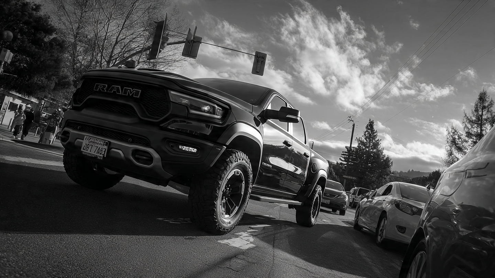

Your Ram 2500 Is in a Fatal Crash. 80% of the Time, You Walk Away.

We computed a metric that doesn't appear in any NHTSA report, any IIHS press release, or any car-buying guide. We called it the self-death ratio: for every fatal crash a vehicle is involved in, what fraction of the dead are its own occupants? A ratio of 1.0 means the vehicle's people always die. A ratio near zero means everyone else does.
The Ram 2500 scored 0.205. Out of 748 fatal crashes involving a Ram 2500 between 2014 and 2023, the truck's occupants accounted for only 153 of the deaths. Another 595 people died too, in the other vehicle, on the bicycle, on foot.[1]
A Chevrolet Cavalier scored 0.857. In 1,429 fatal crashes, 1,225 Cavalier occupants died. That Cavalier driver absorbed the fatality in six out of every seven crashes that killed someone.
Between those two numbers is not a safety feature but rather a wealth transfer denominated in corpses.
The Class Hierarchy
We ran the calculation across every vehicle in FARS with at least 500 fatal crash involvements, then aggregated by class. Results were monotonic and brutal:
Pickups: 0.489. In fatal crashes involving a pickup, fewer than half the dead are pickup occupants, while everyone else on the road comprises the other half. Sedans: 0.645. Almost two-thirds of the dead are the sedan's own people. Sports cars: 0.682, the highest self-death ratio of any class, which means when a Mustang crashes fatally, the Mustang driver almost always pays the bill.[1]
SUVs land at 0.524, pulled lower by the largest models and higher by compact crossovers that weigh barely more than the sedans they replaced. Vans sit at 0.514, with the Ford Transit (0.308) dragging the average down thanks to its commercial-vehicle mass.
Who Exports, Who Absorbs
Ten vehicles with the lowest self-death ratios read like a Ram dealership's inventory sheet crossed with a commercial fleet catalog: Ram 2500 at 0.205, Ford Transit at 0.308, Ram 1500 at 0.341, GMC Acadia at 0.343, Toyota Land Cruiser at 0.347, Ford F-250 at 0.364, Chevrolet Traverse at 0.393, Ford E-350 at 0.410, Lexus RX at 0.410, and Toyota Tundra at 0.415.[1]
Every single one weighs over 4,000 pounds, most exceed 5,000, and the Ram 2500 rolls off the lot at 6,400 pounds curb weight, which makes it less a vehicle and more a mobile barricade with cupholders and a monthly payment.
IIHS confirmed the mechanism in 2025: once a vehicle exceeds the fleet-average curb weight, additional mass provides virtually no extra protection for its own occupants but significantly increases the danger to people in every other vehicle it might hit. Safety benefits from mass plateau around 4,000 pounds. Everything above that is externality.[2]
Who Pays the Tab
Flip the table. Ten vehicles with the highest self-death ratios are sedans you can buy for the price of a Ram 2500's running boards: Chevrolet Cavalier at 0.857, Dodge Neon at 0.856, Buick LeSabre at 0.823, Chevrolet Cobalt at 0.808, Chevrolet HHR at 0.801, Pontiac Grand Am at 0.774, Buick Century at 0.768, Mercury Grand Marquis at 0.761, Chevrolet S-10 at 0.755, and Chevrolet Sonic at 0.754.[1]
These cars share two traits: they are light, ranging from 2,400 to 3,200 pounds, and they are disproportionately driven by people who cannot afford to buy a heavier vehicle. When it was still in production, the Cavalier's median transaction price hovered around $14,000, while a Ram 2500's current MSRP starts at $42,000.
This is a regressive safety tax, and the people least able to afford mass are the people most likely to die when mass collides with them.
Inconvenient Physics
In a head-on collision between two vehicles, the lighter one decelerates faster, and how much faster depends on the mass ratio, which is why a 2003 NBER working paper calculated that every additional pound in the striking vehicle increases the struck vehicle's fatality risk and that the unpriced external cost of American vehicles' weight is equivalent to a $1.08-per-gallon gas tax that nobody collects and nobody pays.[4]
When IIHS controlled for weight in their 2019 pickup compatibility study, a remarkable thing happened. Pickups weighing 3,500 to 4,000 pounds were only 23% more likely to kill a car-partner driver than a car of similar weight. Remove the mass advantage, and pickups are roughly as aggressive as any other vehicle. That remaining 2.5x lethality gap between pickups and cars is almost entirely a weight story, not a design story.[3]
Automakers lowered front-end structures, aligned crumple zones, added side curtain airbags, and SUV-to-car incompatibility dropped from 132% excess fatality risk in 1989 to just 20% by 2022, a genuine engineering triumph that nobody outside IIHS press releases has ever celebrated. Pickups improved too, from 250% excess to roughly 190%, but the raw physics of a 6,400-pound Ram meeting a 2,700-pound Civic cannot be engineered around, because Newton's second law does not respond to voluntary industry commitments.[2]
What This Doesn't Prove
Single-vehicle crashes contaminate the ratio: a sedan driver who runs off the road into a tree will always register as a self-death, inflating the sedan class's ratio independently of any truck-versus-car dynamic, and a purer analysis would filter to two-vehicle crashes only, but our FARS extract doesn't subdivide that cleanly. A 0.489-versus-0.644 class gap almost certainly overstates the multi-vehicle "export" effect.
Age confounds it too, because the Cavalier and Neon are elderly, poorly maintained vehicles disproportionately involved in single-car fatalities, and their high self-death ratios partly reflect the kind of driving and the kind of roads rather than just the physics of who hits whom.
But the mechanism is real and IIHS has measured it independently of our metric. When a 5,000-pound pickup strikes a 3,000-pound sedan, the sedan absorbs approximately 63% of the collision energy. That ratio holds regardless of vehicle age, maintenance, or driver behavior.
What to Do With This
If you drive a sub-3,500-pound sedan and you want to reduce your risk, curb weight is the single variable you can still control at the dealership, and moving from a 2,700-pound Civic to a 3,800-pound RAV4 doesn't just buy you better structure but also buys you a smaller share of every collision's kinetic energy budget. Consider: the RAV4's FARS fatality rate is 0.19 per 100 million VMT, while the Civic's sits at 2.25, which is twelve times higher.[1]
If you drive a full-size pickup, you already know the truck protects you, but what IIHS is now telling you is that the protection stopped improving above 4,000 pounds and the last 2,400 pounds of your Ram 2500 don't make you measurably safer while making everyone around you measurably dead.
Sources & References
- NHTSA, Fatality Analysis Reporting System (FARS), 2014–2023. Self-death ratio computed from per-model occupant deaths and fatal crash involvements. nhtsa.gov
- IIHS, “Supersizing vehicles offers minimal safety benefits — but substantial dangers,” 2025. iihs.org
- IIHS, “SUVs no longer pose outsize risk to car occupants, but pickup compatibility lags,” 2019. Pickups 159% more likely to kill crash-partner drivers. iihs.org
- Anderson & Auffhammer, “Pounds That Kill: The External Costs of Vehicle Weight,” NBER Working Paper 17170. nber.org
Source: NHTSA FARS 2014–2023. Self-death ratio is a derived metric dividing a vehicle model’s occupant fatalities by its total fatal crash involvements. This metric conflates single-vehicle and multi-vehicle crashes; the multi-vehicle “export” effect is likely smaller than the raw class-level gap suggests. See methodology for caveats.